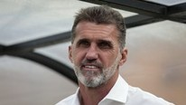
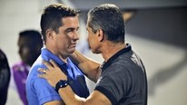
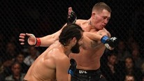
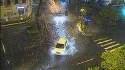
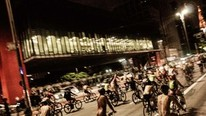

Juiz e assistente são
afastados após erros
contra Fla no Carioca
°Com gol mal anulado, Fla empata com Volta Redonda no Maracanã
°Abel diz que não sai chateado do jogo: 'Hoje, o DNA do Fla é outro'

Mancini diz que
falta confiança
ao São Paulo
°Verdão desconversa
sobre Pato; Gómez fica

Loss é demitido
do Guarani após
vitória da Ponte
°'Demos um baile nos
caras'; Ponte tira onda

Azarão Masvidal
aplica nocaute
em Darren Till
°Edwards e Masvidal
trocam socos após UFC
'Posso me apaixonar',
diz Gabi sobre beijos
em sisters na festa
Tarde tem clássico do
futebol e mudança de
visual de italiano
°Brothers ganham cooler
para celebrar aniversário de Gabi

Chuva forte atinge o
Rio e alaga várias ruas
°Cratera em rua 'engole'
carro
Maia faz almoço para
Bolsonaro, ministros,
Alcolumbre e Toffoli
'Espelho': Isabel surta
ao saber que Justiça
decretou sua prisão
°Com quem Cris ficará no final?

Nus, ciclistas pedem
respeito na Paulista
Homem enfrentou
atirador e evitou mais
mortes na N. Zelândia